Piece 1 · agent-flowWhat it is
agent-flow is a free web page that runs on your own computer. Open it in your browser at http://127.0.0.1:3001 (an address that only your own computer can open; 3001 is the number the page answers on) while Claude Code is working, and you see a dark screen with a glowing hexagon. That hexagon is your Claude Code session. When the session hands a job to a subagent (a second Claude that does 1 task and reports back), a second hexagon appears and a line is drawn between them. Every tool call, such as reading a file or running a command, pops up as a small card beside the agent that made it.

Along the top of the page are tabs, 1 per Claude Code session running on your computer. Each tab is titled with the first words of that session's opening message. Top right shows how many agents are running, an estimate of tokens used (tokens are the units Claude's usage is counted and billed in) and an estimated cost. Along the bottom is a timeline with a LIVE marker and a Review button that replays what happened. There is also a sound button in the top right corner, which mutes the page's small sound effects.
agent-flow was written by another developer and published free, with its code open for anyone to read and change (the Apache 2.0 licence; code at github.com/patoles/agent-flow). It is listed as agent-flow-app on npm, the public store of Node.js programs, version 0.9.1 checked on 2026-09-22. It also comes as an add-on for the VS Code code editor. Our download does not contain agent-flow. It contains 5 small Python scripts: an installer (install.py), a start-and-stop script (start.py), 2 checking scripts (check_hooks.py and cleanup.py) and guard.py, a small program that sits between agent-flow and your browser. Beside them are common.py, the shared code the 5 scripts use, and 1 small JavaScript file, only_this_computer.js, which makes agent-flow refuse requests from other websites. Together they set agent-flow up safely, because agent-flow installed on its own, unchanged, had faults on Ashley's own PC that kept coming back from 2026-06-12 to 2026-09-16, and has 1 more fault, on a Mac as well, that can throw away your Claude Code settings file and everything in it.
This is piece 1 of 4 in the agent workspace. Install them in order: 1 agent-flow, 2 FleetView, 3 ProjectForge, 4 Jeeves. Each one also works on its own.
Words used in this guide
| Word | What it means here |
|---|---|
| Session | 1 conversation with Claude Code, running in 1 terminal window. |
| Subagent | A second Claude that your session starts to do 1 job and report back. |
| Tool call | 1 action Claude takes, such as reading a file or running a command. |
| Token | The unit Claude's usage is counted in. 4 tokens are roughly 3 words. |
| Hook | A command Claude Code runs by itself every time a given event happens, such as a tool about to run. Hooks are listed in settings.json. |
| Terminal | The Terminal app on your Mac: the text window where you type commands. |
| Server | The agent-flow program running in the background on your computer, which draws the page. |
| 127.0.0.1 and localhost | 2 ways of writing "this computer". An address that starts with either of them opens only on your own computer. |
| Port | The number after the colon in an address such as http://127.0.0.1:3001. It picks out which program on your computer answers. In this set of 4: agent-flow 3001, FleetView 3010, ProjectForge 3020, Jeeves 4040. |
| Node.js, npm, npx | Node.js runs programs written in JavaScript; npm is its public store of programs; npx downloads a program from npm and runs it. |
| settings.json | Claude Code's settings file, in the .claude folder inside your home folder. |
| Repo | A project's folder of code, kept on GitHub. git clone copies it to your computer. |
| Watch folder | The folder agent-flow listens to; only sessions started inside it appear. |
| Exit code | The number a program hands back when it finishes; 0 means all went well. |
Piece 1 · agent-flowWhy you would want it
When you run agents, most of the work is invisible. You type a request and later an answer arrives. You do not see which subagents were called, in what order, or which files they opened.
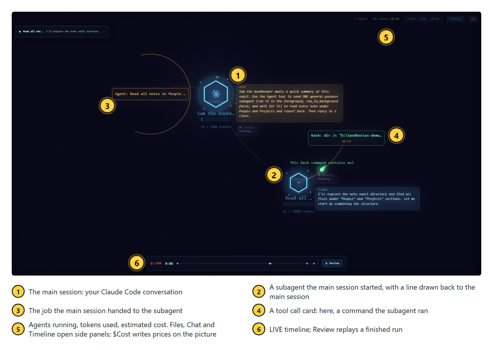
agent-flow only watches what your agents do; it cannot change what they do. (It does rewrite settings.json when it starts: see the security section below.)
What it is for
Watching, as it happens, which subagents a Claude Code session starts and which files and commands it uses.
Works well when
- You are building an agent. Its instructions say it calls 3 specialists. You run it with this screen open and see which specialists it really starts, in what order, and every file it really reads.
- A session is slow or costing more than you expected. You see the moment it starts 5 subagents at once, or reads the same file 4 times.
- You are recording your screen for a video, for a client, or for a live training you are running. Someone watching sees each subagent start, and each file it opens, as it happens.
- You have just changed an agent's instructions and want to watch the next run rather than read a summary of it afterwards.
- You want to know why a session has gone quiet: waiting on 1 slow command, or working through 6 subagents.
Does not work well when
- agent-flow keeps nothing. The Review button replays only what the agent-flow program on your own computer is still keeping; stop that program and the record is gone for good. For a written trail of what each agent did, use ProjectForge, piece 3 of 4.
- You want every session on 1 screen. It draws 1 session per tab and you click between them. Ashley's attempt to merge them failed on 2026-06-12 (see How we built it). FleetView, piece 2 of 4, is the screen that does this.
- You are screen-sharing or recording for other people. Each tab is titled with the opening words of that session's prompt, and the cards beside each agent show your file names and commands. Check the tabs before you share.
- You want to leave it running all day unwatched. Our kit makes agent-flow refuse requests from other websites, but any program already running on your own computer can still open the page and read your conversation while agent-flow runs. Stop it when you are not watching:
python3 start.py --stop. - Do not install this piece if you do not want Node.js on your computer. agent-flow needs Node.js, and once agent-flow's small command has been added to Claude Code's settings file, every tool call starts Node.js once, even when the screen is off, until you uninstall.
Piece 1 · agent-flowHow we built it
This is how Ashley set agent-flow up on his own PC (not a Mac), what broke, and what we kept. Every date and count below was read from his files, settings backups and logs on 2026-09-22.
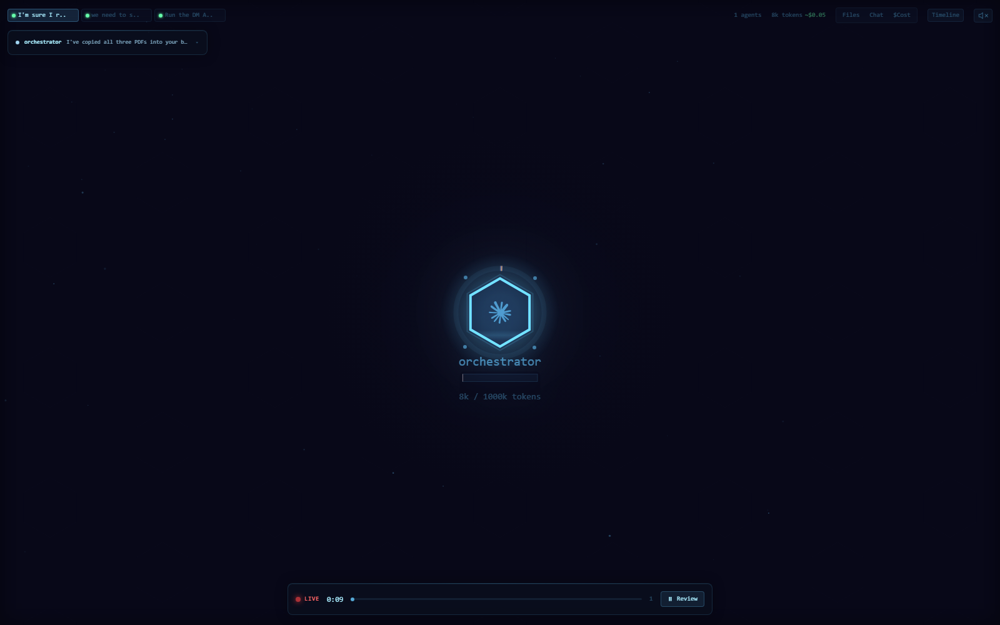
agent-flow is 1 of 4 screens Ashley built around his agents. The other 3 each have their own guide in this set of 4: FleetView, ProjectForge and Jeeves.
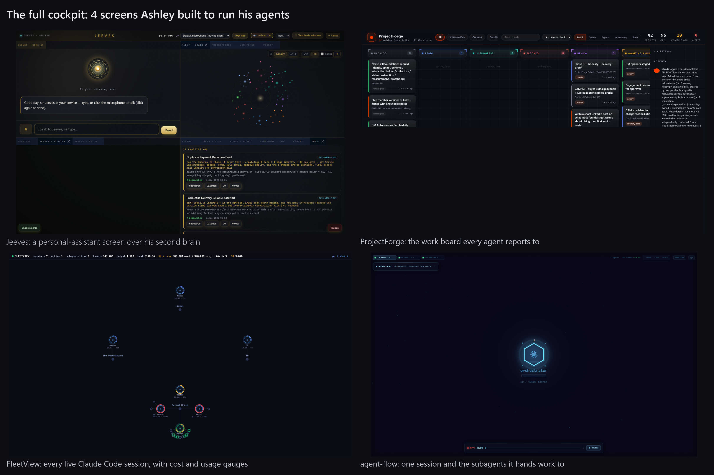
Claude Code lets you register a hook: a command it runs by itself every time a given event happens, such as "a tool is about to be used" or "a subagent has started". agent-flow registers a small script, hook.js, on 9 kinds of event. Each time 1 of them happens, Claude Code runs hook.js and hands it a description of the event. The script looks in the folder <your home>/.claude/agent-flow/ for small files that say where the agent-flow server (the agent-flow program running in the background, which draws the page) is listening, and sends the event there. The server updates its picture and your browser redraws.
The page is drawn from 2 sources: the hook, and Claude Code's own session transcript files. The server reads Claude Code's own session transcript files, in <your home>/.claude/projects/, and that is where the tab title, the conversation in the Chat panel, the token counts and every subagent come from. The second hexagon, and the line joining it to the first, are drawn from the place in that transcript where the session starts the subagent, not from the "a subagent has started" event, which records only a name.
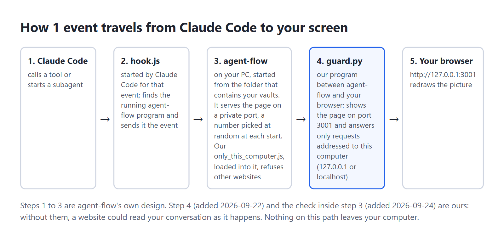
2026-06-12: install day
- Installed with
npx -y agent-flow-app(the-yanswers yes to the download question).npxcomes with Node.js; it downloads a Node.js program and runs it in 1 go. On its first run the package wrotehook.jsand added it to 9 kinds of event in Claude Code'ssettings.jsonfile: SessionStart (a session opens), PreToolUse and PostToolUse (before and after each tool call), PostToolUseFailure (a tool call fails), SubagentStart and SubagentStop, Notification (Claude Code shows a message), Stop (Claude finishes a reply) and SessionEnd (a session closes). - Fix 1, the launch folder. The server remembers the folder it was started from, and only accepts events from Claude Code sessions running inside that folder. Started from the wrong place, it shows nothing. So it was set to start from the Documents folder, which contains every vault.
- Start by itself when the computer starts, with no window. On his PC a small script file started it each time the computer started and he signed in. It runs
npx -y agent-flow-app --no-open, and--no-openstops it opening a browser tab. - Every session on 1 screen, tried and undone. Ashley wanted every session on 1 screen instead of 1 tab each. We changed agent-flow's own code so it sent every session to the same screen. The data looked right, and it was reported as done without anyone looking at the screen. Ashley's reply: "that hasn't worked - It's not working at all." agent-flow's drawing code supports exactly 1 main hexagon per screen, so 6 main hexagons stacked on the same spot and their labels turned to nonsense. agent-flow was put back exactly as its author published it. Since then, every change to a screen is checked with a screenshot, never by reading the data behind it.
- The 1-screen wish went to a different tool, FleetView, which is piece 2 of 4.
- A backup of
settings.jsontaken at 17:00 that day already had 5 copies of the agent-flow hook on every event. The next day's backup had 4.
Fix 2: old files pointing at servers that had stopped (date not recorded)
Each time the server starts it writes a small file into <home>/.claude/agent-flow/. Its name is a random code, a dash, the process number (the number the computer gives each running program), then .json, and inside it says which port that server listens on and which folder it watches. This guide calls those files registration files. The hook is meant to delete files for servers that have stopped. On Ashley's PC its "is this server still alive?" check always answered yes. Worse, when several files match a session's folder, the hook sends only to the server watching the smallest folder that contains the session (Documents/Second Brain is smaller than Documents, because it sits inside it). So if an old file names a server for a smaller folder, and that server has stopped, every event goes to it and is lost, the real server gets nothing, and the screen stays empty. The fix was to delete the old files and keep the file for the server that is running. 13 such files were still in that folder on 2026-09-22, dated 2026-06-12 to 2026-08-06. The kit you download does this clean-up before every start, on a Mac too.
2026-07-09 to 2026-09-16: the hook copies pile up
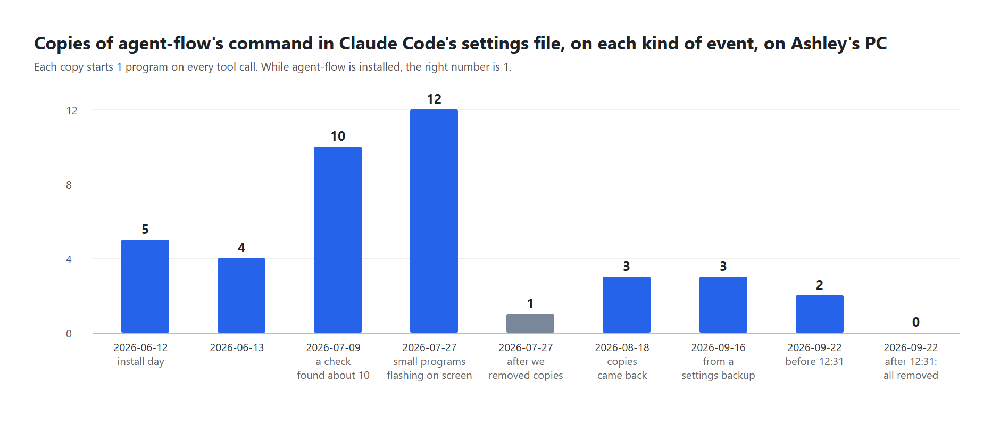
- 2026-07-09: a check of the settings file found the hook registered about 10 times on every event.
- 2026-07-19:
npxdownloaded the newer agent-flow, version 0.9.1. - 2026-07-27: Ashley: "Instances keep opening on my PC." The settings file had 112 hook entries in total; agent-flow's was on every event 12 times. Each tool call started about 27 small command-window programs, and each flashed a window on screen. Every hook was cut to 1 copy per event and command: 112 entries down to 13.
- 2026-08-18: the copies had come back: 3 per event.
- 2026-09-16: a backup shows 3 per event. On 2026-09-22 the file had 2 copies per event, and all of them were removed that day. No written record was found of the drop from 3 to 2.
At the time, why the copies piled up was not recorded. While building our download (the 5 Python scripts) on 2026-09-22 we read agent-flow 0.9.1's own set-up code and found a cause. Before adding its hook, agent-flow checks whether it is already there by searching your settings for the text agent-flow/hook.js, with a forward slash. On a PC the path it writes uses the other slash, so the search never matches its own entry, and every time the server starts, it adds another copy to all 9 kinds of event. We tested it on a PC in a test folder: 3 starts gave 3 copies per event. A server that starts by itself every time the computer starts, plus starts by hand during fixes, matches every rise in the chart. We cannot prove it was the only cause, because nobody logged each start.
On a Mac the path agent-flow writes already uses forward slashes, so its search finds its own entry: this pile-up is a PC fault (read from agent-flow's code; a Mac never showed it in our tests). Our installer still counts the hook on every event at every install and prints the count, so a second copy would show.
The usage-tracking finding
agent-flow 0.9.1 sends anonymous usage events (an install code, its version, your operating system, session length) to a server run by its author, unless 1 of 2 switches is set before it starts: AGENT_FLOW_TELEMETRY=false or DO_NOT_TRACK=1. These are environment variables: settings a program reads from macOS when it starts. The GitHub page summary says tracking is off by default; the code switches it on. On Ashley's PC, 4 such events were logged between 2026-07-19 and 2026-08-06, because the file that started his agent-flow when his computer started set neither switch. Ours sets both, and start.py sets both every time it starts agent-flow, so tracking stays off even if you choose not to have that file.
2026-08-06: switched off
At 17:25 on 2026-08-06 the entry that started agent-flow with Ashley's PC was switched off, in the same minute as the FleetView dashboard. Who did it and why was not written down. A note Ashley wrote on 2026-09-22 says these screens were "stopped not deleted" when his work changed direction. The hooks were left in place, so every tool call still started Node.js (the program that runs agent-flow's scripts) once, found no server and quit. Our uninstall removes those hooks.
2026-09-22: what a security check of our own kit found
Before this guide went out, our 5 Python scripts (the kit you download) were tested by someone trying to break them, using the real agent-flow in a test home folder. 3 faults were found and all 3 are fixed in the version you download. A 4th, found on 2026-09-24, is the last item below, and it is fixed too.
- agent-flow could wipe your Claude Code settings when your computer starts. agent-flow runs its own set-up every time it starts. If it cannot read
settings.json, it throws the whole file away and writes a new one containing only its 9 hooks: your permission rules, your blocked commands, your model choice and every other hook, gone, with no backup. 2 ordinary slips make the file unreadable to it: a comma after the last item (easy to leave after a hand edit), and an invisible marker at the very start of the file called a byte-order mark, which some editors add when they save. With agent-flow starting by itself each time you log in, that would happen the next time you did, with nothing on screen to tell you. Our fix:start.pynow checks the file before every start and does not start agent-flow if the file is unsafe; it says why on screen and inlogs/start.log. There is also a second check: a new file,guard.py, keeps an exact copy of your settings before agent-flow starts, watches the file for the first 60 seconds, and puts your copy back if agent-flow changed it. Tested with the real agent-flow: with a comma after the last item, or with a byte-order mark, your settings file is left exactly as it was, character for character. - Stop could close an unrelated program.
start.py --stopused to stop whatever program had the process number saved when agent-flow last started. After a restart, the computer can give that number to any program, including Claude Code or your browser. Our fix: the saved record now includes the moment the program started, and stop only acts when both match. - Other websites could read the page. agent-flow's page shows your conversation as it happens: your prompts, Claude's replies, file names and commands. It answers every request that reaches it, and never checks which website the request came from. A website you visit can trick your browser into sending its requests to your own computer, and then read your conversation while you browse. Our fix: agent-flow now serves its page on a private port, a number picked at random at each start, and
guard.pypasses that page to you at http://127.0.0.1:3001.guard.pyanswers only requests addressed to this computer (127.0.0.1,localhostand[::1]are 3 ways of writing "this computer"). Anything else is refused. - agent-flow's own 2 ports were still open (found and fixed on 2026-09-24).
guard.pyguarded only port 3001. In a test with the real agent-flow, a request sent straight to the private port, naming another website as its address, got the page and the live conversation back. The port that receives events fromhook.jsalso took a made-up event sent with another website's name on it, and drew it on the screen. Our fix:guard.pynow starts agent-flow with our small fileonly_this_computer.jsloaded first (Node.js's--requireoption runs a file before the program itself). It makes both of agent-flow's ports refuse any request that names another website or was sent from one. agent-flow's own files are unchanged. The same test run again: every request from the made-up website was refused (5 of 5), and events fromhook.jsstill reached the page.
2 limits remain. First, the checks work only when our kit starts agent-flow (python3 start.py, or our LaunchAgent that starts it when you log in). A copy started by hand with npx agent-flow-app has none of them. Second, any program already running on your own computer can still open the page, as with every page at 127.0.0.1. If you are not watching agent-flow, stop it with python3 start.py --stop.
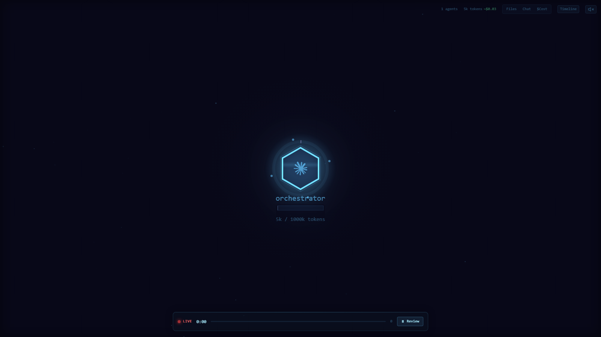
What we kept for you
- agent-flow exactly as its author published it, downloaded by your own computer from npm. We changed none of its code.
- The hook entry in settings.json written with forward slashes (/), so agent-flow recognises it and never adds another copy.
- A LaunchAgent (a small file in
~/Library/LaunchAgentsthat tells your Mac to start 1 program each time you log in) that starts agent-flow with no window, from the folder that contains your vaults, with usage tracking off. cleanup.py, which deletes the registration files a stopped agent-flow server left behind saying where it was listening, and ends a second server left watching the same folder, run automatically before every start.check_hooks.py, a count of every hook on every event.guard.py, which puts settings.json back if agent-flow wipes it and refuses page requests from other websites (both found when we tried to break the kit on 2026-09-22).only_this_computer.js, whichguard.pyloads into agent-flow so that agent-flow's own 2 ports refuse other websites too (added 2026-09-24).- If the computer hands agent-flow's private port to another program in the moment before agent-flow takes it,
guard.pypicks another number and tries again, up to 3 times (1 start in 34 failed this way on a PC on 2026-09-22). - A start that fails now tells you why in 1 sentence, instead of pointing you at a log full of Node.js text (added 2026-09-23. On 2026-09-22 we started agent-flow 34 times in a row; 1 start failed, and the message it printed could not be read).
Piece 1 · agent-flowPros and cons
| Pros | Cons | |
|---|---|---|
| Cost | Free, with its code open to read. Uses no Claude tokens itself. | Every tool call starts Node.js once, to run hook.js, and Claude Code waits for it to finish each time: about 0.05 seconds on our test PC on 2026-09-24, and never more than 1.5 seconds, because hook.js ends itself by then. It does this even when the server is off, until you uninstall. |
| Setup | About 1 minute with our installer, plus the first download. | Needs Node.js 22 or newer. |
| What you see | A subagent appears within a second of starting, read from Claude Code's own session transcript file; every tool call is a card beside the agent that made it; the Review button at the bottom of the page replays a finished run. | 1 session per tab. There is no single screen with every session: our 2026-06-12 attempt to add that screen failed. FleetView (piece 2 of 4) is that screen. |
| Accuracy | Tool calls come straight from Claude Code's own events; subagents, the conversation and the token counts are read from Claude Code's session transcript files. | Token counts and costs are estimates. On Ashley's PC they disagreed with FleetView (the session-and-cost screen in piece 2 of 4) for the same session. |
| Privacy | agent-flow listens only on your own computer, and our kit makes all 3 ports (the page at 3001, which is guard.py's, and agent-flow's own 2: its private page port and the port that receives events) refuse requests from other websites. | Tab titles show the first words of your prompts, so take care when screen-sharing. agent-flow's own usage tracking (it sends anonymous usage figures to its author) is on unless switched off, and start.py switches it off every time it starts agent-flow, whether you start it by hand or it starts with the computer. A copy of agent-flow started by hand, without our kit, has none of these checks. |
| Safety | Our kit will not start agent-flow on a settings file it would wipe, and puts the file back if it changes anyway. | agent-flow still runs its own set-up every time it starts. Our checks run before and after that set-up; they cannot stop it happening. |
| Faults | Our kit handles the faults Ashley met: it starts agent-flow from your watch folder, deletes leftover registration files before every start, and counts the hook on every event at every install. Closing agent-flow by force (Force Quit, or a crash) used to leave a second server running and sending the same events twice; cleanup.py now counts how many agent-flow servers are running, instead of how many folders are being watched, ends the extra server, and prints a line saying it did. | agent-flow's own registration files are still written by agent-flow, so a server closed by force leaves its file behind until the next python3 start.py or python3 cleanup.py. |
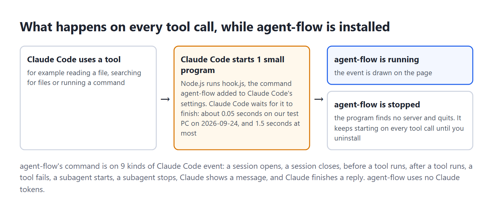
Piece 1 · agent-flowBefore you start
Before you start on a Mac
Python. Install Python from https://www.python.org/downloads/macos/ (the macOS installer; we tested 3.14.7). When it finishes, double-click Install Certificates.command and Update Shell Profile.command in the Python folder inside Applications, then open a new Terminal window. Check with python3 -c "import sys; print(sys.prefix)": it must print a line starting /Library/Frameworks/Python.framework. If it starts /opt/homebrew or /usr/local/Cellar, your Terminal uses Homebrew's Python: every command here still works, and the self-checks below use a private Python folder, which works with either.
Node.js. Install the LTS version from https://nodejs.org (we tested v24.21.0), open a new Terminal window, and check with node --version: v22 or higher.
The first git. Your Mac may show a box asking to install the command line developer tools. Press Install, wait until it has finished, then type the git line again (not tested on a real Mac).
If Terminal says claude is not found, type echo 'export PATH="$HOME/.local/bin:$PATH"' >> ~/.zshrc, open a new Terminal window, and check with claude --version.
Your second brain is at ~/Second Brain on a Mac (a folder in your home folder), not in Documents, because macOS can refuse a program that starts by itself access to Documents (not tested on a real Mac). If a page says "macOS refused access to" a folder, move that folder into your home folder and run python3 install.py again (not tested on a real Mac).
"Allow Python to find devices on local networks?" If macOS asks this the first time the page opens, press Allow. This advice is not tested on a real Mac.
Apple Silicon or Intel: the steps are the same on both, and both were tested.
What to check
| You need | How to check | If it is missing |
|---|---|---|
| Claude Code | claude --version | You have it from earlier Outliers Accelerator sessions. If Terminal says claude is not found, see "Before you start on a Mac" above. |
| Python 3.11 or newer | python3 --version | python.org, as above. install.py tests this and stops if it is older, because Python 3.8 stopped getting security fixes on 2024-10-07 and Python 3.10 gets them only until 2026-10-31. |
| Git | git --version | The first time, your Mac may offer to install the developer tools: see above. |
| Node.js 22 or newer | node --version | The LTS version from nodejs.org, as above (LTS means long-term support, the version that goes on getting security fixes longest). Node.js 18 stopped getting security fixes on 2025-04-30 and Node.js 20 on 2026-04-30, so install.py stops on anything below 22. Then open a NEW Terminal window, because a window opened before the install cannot find Node.js. |
| Port 3001 free (the number the page answers on) | Open http://127.0.0.1:3001 in a browser; it should fail to load | Install with python3 install.py --port 3002 instead, then use 3002 wherever this guide says 3001. |
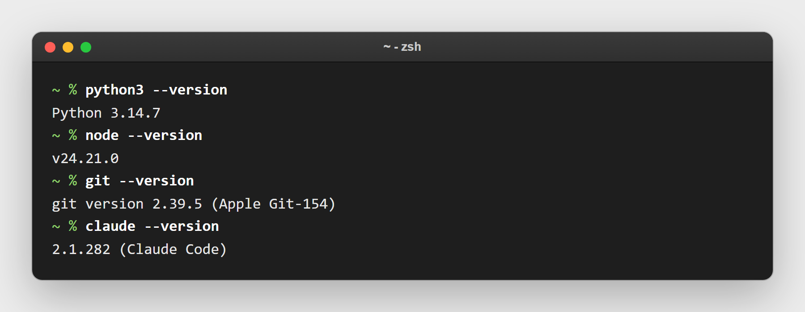
You also need to know where your second brain vault and your CRM vault live. The installer finds them for you in 1 of these ways: small files called .outliers-sb and .outliers-crm in your home folder, each containing the path to 1 of your vaults (the installers from earlier Outliers Accelerator sessions left them there), a folder with an .obsidian folder inside it (that is what makes a folder an Obsidian vault) up to 2 levels under your home or Documents folder, or, for the CRM, a vault whose name contains crm, pipeline, sales or clients, or a folder called CRM in your home folder (~/CRM).
Piece 1 · agent-flowInstall it
- Open Terminal: press Command and Space together, type
Terminal, press Return. It opens in your home folder, which is where all 4 downloads in this set go.
- Type these 3 lines, 1 at a time, pressing Return after each:
git clone https://github.com/OUTLIERS-ai/outliers-ws-01-agent-flow-mac
cd outliers-ws-01-agent-flow-mac
python3 install.pyKeep the folder where it lands: the LaunchAgent that starts agent-flow when you log in points at it.
- Answer 3 questions. Press Return to accept the suggestion in square brackets.
- Where is your second brain vault?
- Where is your CRM vault?
- Which folder should agent-flow watch? It suggests the folder that contains both vaults. It must contain every folder you run Claude Code in, or those sessions will not show.
If a question shows no suggestion, paste the full path of that vault (in Finder, right-click the folder, press the Option key, and choose Copy as Pathname while it is down). No CRM vault yet? Press Return to leave it blank.
- Wait for the first run. The installer downloads agent-flow and starts it once, with no window, pointed at a temporary empty folder that stands in for your home folder, so it writes its own
hook.jswithout touching your settings. It copies that script into your.claude/agent-flowfolder and stops it. This can take up to 3 minutes on a slow connection. You do not need an account or a password for this step. - Read the table the installer prints at the end: 1 row per kind of event. Every event should show
1in the "after" column. If you had old copies, the "before" column shows how many, and a dated backup of your settings is named on screen. Last, it writes the LaunchAgent that starts agent-flow when you log in,~/Library/LaunchAgents/com.outliers.agent-flow.plist, and says it runs the next time you log in to your Mac.
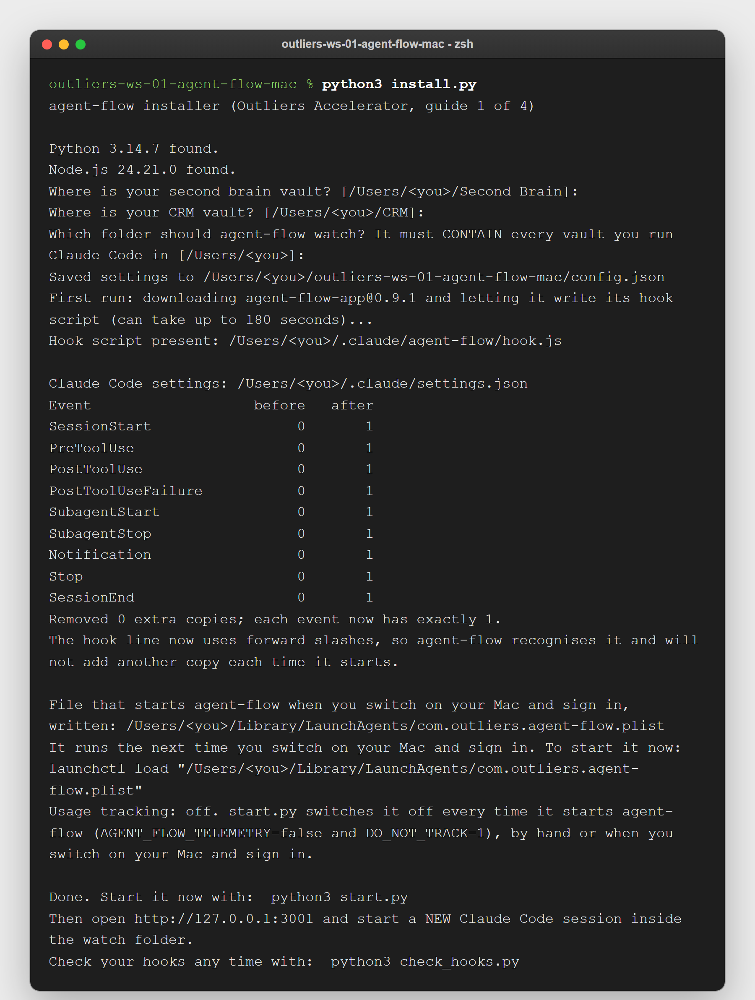
- Start it now:
python3 start.py. From your next log-in it also starts by itself, with no window, each time you log in to your Mac. - Open http://127.0.0.1:3001. In the middle of the page you see "WAITING FOR AGENT SESSION" in capitals, and under it "Start a Claude Code session to see activity".

- Open a new Claude Code session inside 1 of your vaults. Sessions that were already open show nothing, because Claude Code reads hooks only when a session starts. Ask it for something that uses a subagent, for example: "Use a subagent to list the notes in my People folder, then summarise them in 2 lines." A hexagon appears, then a second hexagon with a line to it. Nothing after 30 seconds? Check the session was started AFTER step 6 and inside the watch folder shown by
python3 start.py --status, then see the "When it goes wrong" table at the end of this guide.

- Run
python3 check_hooks.py. It should end withRESULT: OK.
to remove everything later, run python3 install.py --uninstall. It stops the server, takes a backup, removes every agent-flow hook entry, and deletes the LaunchAgent that starts agent-flow when you log in. Your settings go back to exactly how they were, character for character, as long as the backup from your first install is still there. If you had no settings file before, an empty settings file (containing only {}) is left. The folder ~/.claude/agent-flow stays; you may delete it by hand.
Piece 1 · agent-flowUsing it day to day
Every command below runs inside the downloaded folder. In a new Terminal window, type cd outliers-ws-01-agent-flow-mac first.
- Leave the page open in a browser tab while you work. Switch tabs at the top to follow a different session.
- Press Review on the bottom bar to replay a run that has finished.
- The Files, Chat and Timeline buttons top right open side panels: which files were touched, the conversation, and a timeline of every call.
- The $Cost button beside them opens no panel. It writes an estimated price above each hexagon and draws a small cost box in the corner of the picture, split by agent and by tool. Nothing appears until a session has used enough tokens for the estimate to come to more than $0.00.
- Check your hooks once a week:
python3 check_hooks.py. Anything other than 1 per event means something else has been writing to your settings. - If the page goes quiet: run
python3 start.py --stop, thenpython3 start.py, then open a new Claude Code session. - If a start fails, it now tells you why in 1 sentence on screen: the port was taken, the internet is not reachable and agent-flow is not saved on this computer yet, Node.js is missing or too old, or the package name in
config.jsonis wrong.python3 start.py --statusrepeats that sentence later. - Stopping:
python3 start.py --stopsays "Stopped agent-flow." or "agent-flow was not running. Nothing to stop." Check any time withpython3 start.py --status. - If you move your vaults, run
python3 install.pyagain and give the new watch folder. The suggestions in square brackets are your OLD paths, so type the new ones for each vault and for the watch folder. If the server was running, the installer stops it and starts it again for the new folder. If you once chose--no-autostart, running the installer again without it keeps that choice, because it is saved inconfig.json;python3 install.py --autostartswitches starting when you log in back on. - Screen-sharing: close the tab or pick a demo session first. Tab titles show the start of your prompts.
- When you are not watching, stop it with
python3 start.py --stop. While it is stopped, no website can reach the page.
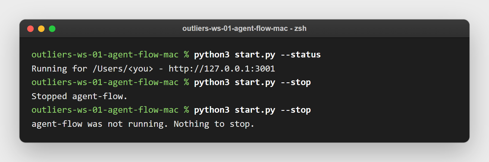
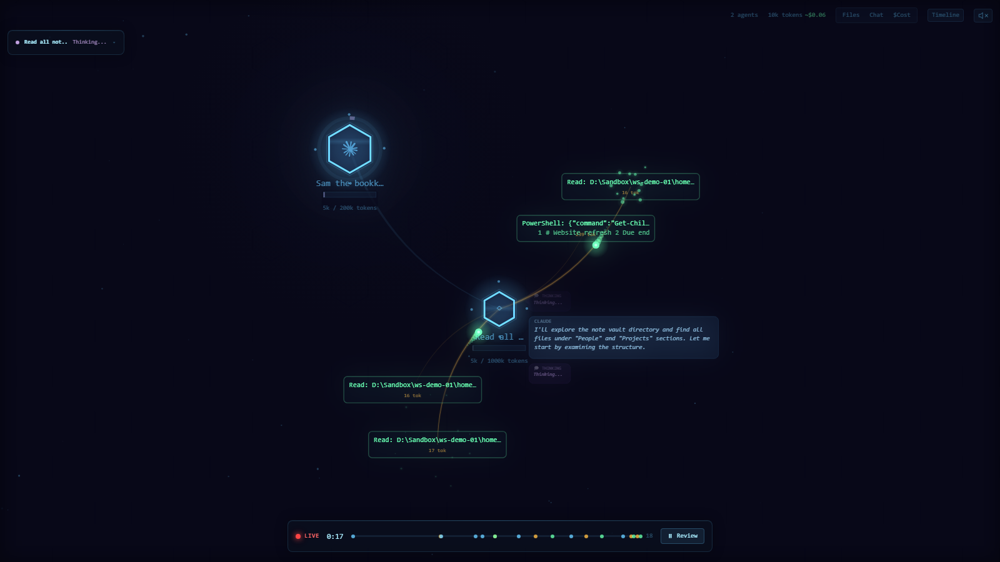
Piece 1 · agent-flowFit it to your own AI system
The safe way. Make your changes in a copy of the folder, called agent-flow-test, never in the folder you installed. In the copy, run only the self-checks. Never run install.py or start.py in the copy: both act on the same settings file, the same LaunchAgent that starts agent-flow when you log in, and the same running agent-flow as your everyday folder, so the copy would take them over. The self-checks are safe while your everyday agent-flow is running: they use a made-up home folder and a stand-in for agent-flow, never your real settings or port 3001.
- Make the copy. Open a new Terminal window (it opens in your home folder, where the download is) and type:
cp -R outliers-ws-01-agent-flow-mac agent-flow-test- Go into the copy and delete its
logsfolder, which contains the record of your running agent-flow. If there is nologsfolder, the second line does nothing:
cd agent-flow-test
rm -rf logs- Once, first, make a private Python folder for the self-checks and install pytest into it (pytest is the program that runs the self-checks; the private folder,
~/outliers-checks, works whichever Python your Mac uses):
python3 -m venv ~/outliers-checks
source ~/outliers-checks/bin/activate && python -m pip install pytest- In the copy, run the self-checks after every change:
source ~/outliers-checks/bin/activate && python -m pytest -qExpect 54 passed, 5 skipped. 4 of the skipped run only against the real agent-flow package, which the checks do not download; they stay skipped unless you set AGENT_FLOW_REAL=1. The 5th checks a path only a PC uses. Any other answer means the change broke something, so put it back before you go on.
- When a change passes, copy the changed files back into your everyday folder,
outliers-ws-01-agent-flow-mac. Go into it withcd ../outliers-ws-01-agent-flow-mac, then runpython3 start.py --stop, thenpython3 start.py, thenpython3 check_hooks.py, and expectRESULT: OK. If you changedinstall.py, runpython3 install.pythere beforepython3 start.py.
Read "Every command and setting" near the end of this guide before you ask Claude Code for a change: the watch folder, the port and whether agent-flow starts when you log in are already settings in config.json. Leave 1 line alone: the agent-flow hook line inside Claude Code's own settings.json. Never type that line by hand; python3 install.py writes it, and python3 check_hooks.py proves there is still exactly 1 copy of it on each event.
Ashley changed his own copy. He tried patching agent-flow to put every session in 1 tab, looked at the screen, saw 6 sessions stacked on the same spot, and threw the patch away. He worked out 2 fixes on his own PC himself: start the server from the folder that sits above all your vaults, or it never hears your sessions; and delete the leftover registration files, or events stop arriving with no warning. His own file that started agent-flow with no window each time his PC started left usage tracking on; ours switches it off. He added a count of hooks after his own settings file reached 12 copies of the same hook on every event. The download you have contains both fixes and the hook count.
Each idea below comes with a prompt you can paste into Claude Code, opened in the outliers-ws-01-agent-flow-mac folder unless it says otherwise: in a new Terminal window, type cd outliers-ws-01-agent-flow-mac, then claude.
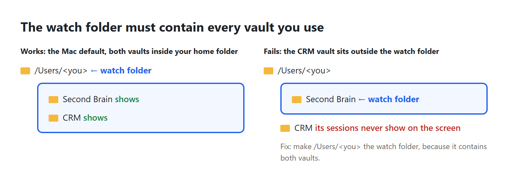
- See your second brain AND your CRM in 1 place. The server only hears sessions inside its watch folder. On a Mac your second brain is at
~/Second Brainand your CRM at~/CRMunless you chose otherwise, so the only folder containing both is your home folder, which is what the installer suggests. If you keep a vault anywhere else, check that it sits inside the watch folder.
Read config.json. Tell me whether my second brain vault and my CRM vault are both inside watch_folder. If not, run install.py again with --watch-folder set to the nearest folder that contains both, and show me the before and after.- Watch your content system write a batch of posts. Run whatever agents or scripts write your posts from a folder inside the watch folder, open agent-flow, and start a batch. You will see which steps start subagents and which are commands Claude runs, each shown as a card.
The agents or scripts that write my posts live at <path>. Check whether that folder is inside the watch_folder in config.json. If it is not, tell me the smallest change: move the folder, or widen the watch folder. Do not move anything without asking.- Check an agent you are building really does what its instructions say. Open the agent's file, list what it claims to call, run it with agent-flow open, and compare.
Read ~/.claude/agents/<agent-name>.md. List every subagent, tool and file it says it uses, as a checklist. I will run it now with agent-flow open and tell you what cards appeared. Then mark each checklist line as seen, not seen, or seen but not listed.- Give every subagent a real name. If your session starts a subagent that is not one of the named agents in your agents folder (
~/.claude/agents, where each agent has its own file), it is labelled with the first words of the job it was given, such as "Read all ...", instead of an agent's name. Named agents make the picture readable.
Search my second brain's CLAUDE.md and my agent files for places that start a subagent with a generic type such as general-purpose. List each one and suggest which named agent from ~/.claude/agents/ should be used instead. Change nothing yet.- Keep a permanent log. agent-flow keeps no history once the server stops. Add a second, separate hook that appends each event to a dated file, then summarise a day into your second brain.
Add 1 NEW hook to my Claude Code settings.json on SubagentStart and SubagentStop that appends the event as 1 JSON line to ~/.claude/agent-events/YYYY-MM-DD.jsonl. Use a Python script run with python3. Take a dated backup of settings.json first, write it with a temp file and os.replace, and run python3 check_hooks.py afterwards to prove every event still has 1 copy of each command.- Stop Node.js starting for nothing when the server is off. If you only use agent-flow sometimes, every tool call still starts Node.js for nothing. Remove the hooks when you stop, and put them back when you start.
Write stop_all.py and start_all.py in this folder. stop_all.py runs start.py --stop and then removes the agent-flow hooks using common.remove_agent_flow, with a backup. start_all.py puts the hooks back with common.install_agent_flow and runs start.py. Add tests using a temporary home folder, like the ones in tests/, and run them in my private Python folder ~/outliers-checks.- Run it only when you want it. Skip the LaunchAgent that starts agent-flow when you log in, and start it by hand instead.
--no-autostartalso removes the LaunchAgent if you already have it. The choice is saved inconfig.json, so runningpython3 install.pyagain later keeps it;python3 install.py --autostartputs the LaunchAgent back.
Run python3 install.py --no-autostart and check that ~/Library/LaunchAgents/com.outliers.agent-flow.plist is gone. Then make 2 files on my Desktop that I can double-click: "Agent screen.command", which runs python3 start.py in this folder, and "Stop agent screen.command", which runs python3 start.py --stop. Make both runnable with chmod +x and show me their contents.- Capture footage for content. Record the page while several agents are working at once: it gives you a short video of "the agents working" to use in a post.
Write capture.py: open http://127.0.0.1:3001 in headless Playwright at 1600 by 900, take a screenshot every 2 seconds until I press Ctrl+C, and save them numbered into a folder called captures with today's date. No visible browser window.- Weekly hook check without a window. Run the duplicate check once a week, with no window, and write the result into your second brain's inbox only when something is wrong.
check_hooks.pyends with exit code 1 when it finds a duplicate and 2 when settings.json cannot be read (an exit code is the number a program hands back when it finishes; 0 means all well).
Make a LaunchAgent that runs check_hooks.py with python3 once a week on Monday at 09:00, with no window (use StartCalendarInterval). If the exit code is 1 or 2, write a short note into <second brain>/Inbox/ named YYYY-MM-DD hook check.md with the output. Do not run it more often than weekly.Piece 1 · agent-flowEvery command and setting
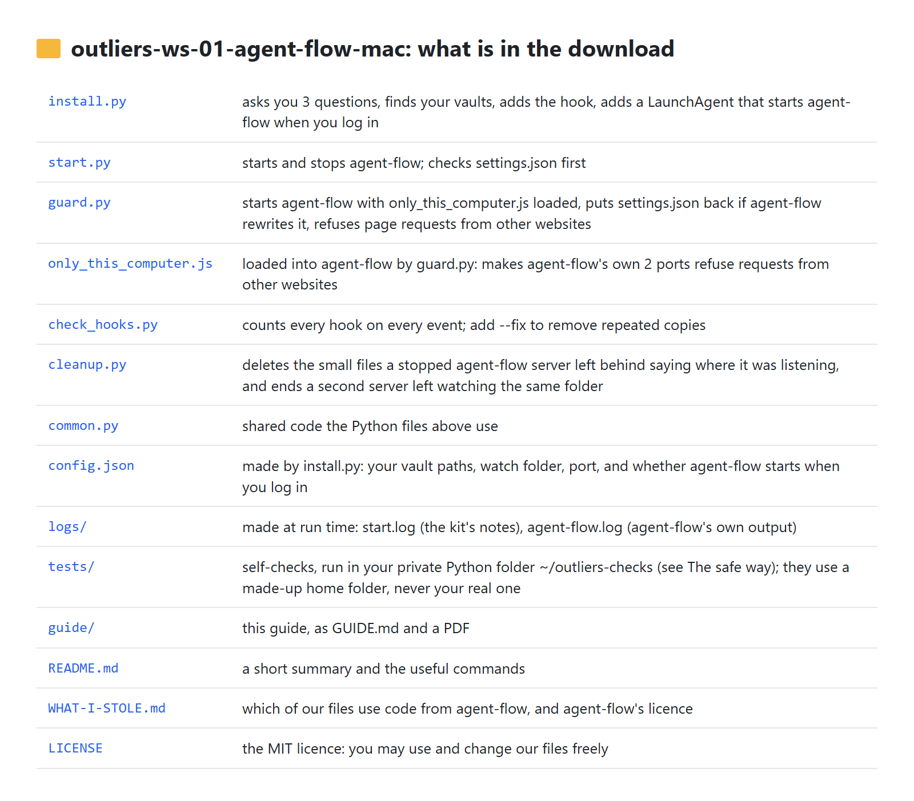
install.py (every option can be combined with the others, except --autostart with --no-autostart)
| Option | What it does |
|---|---|
| (none) | Asks you 3 questions, then installs. |
--yes | Accepts every suggestion without asking. |
--second-brain <path>, --crm <path> | Gives the vault paths instead of answering the questions. |
--watch-folder <path> | Sets the watch folder and skips the 3 questions. The installer warns you if a vault is not inside it. |
--port <number> | The page's port (default 3001). A running server is moved to the new port. |
--no-autostart | Does not add the file that starts agent-flow when the computer starts; also removes that file if you already have it. The choice is saved in config.json, and later runs of install.py keep it. |
--autostart | Puts that file back after an earlier --no-autostart, and saves that choice instead. |
--start-now | Starts the server at the end, so you can skip step 6. |
--uninstall | Stops the server, removes every agent-flow hook (backup first) and the file that starts agent-flow when the computer starts. |
--package, --node-path, --wait | Advanced and for testing. --package: which agent-flow version to run (default agent-flow-app@0.9.1). --node-path: which copy of Node.js the hook should use. --wait: how many seconds to wait for the first download (default 180). |
start.py
| Option | What it does |
|---|---|
| (none) | Checks settings.json, deletes leftover registration files, starts agent-flow with no window, prints the address. |
--stop | Stops the server this kit started. |
--status | Says "Running" or "Not running", and if the last start was refused or failed, the 1-sentence reason. Exit code 0 when running, 1 when not. |
--port, --watch-folder, --package, --wait | Override config.json for this run only. |
--foreground, --quiet | Used by the LaunchAgent that starts agent-flow when you log in. --foreground: stay running until agent-flow stops, instead of handing your terminal straight back, which the LaunchAgent needs. --quiet: print nothing at all. |
check_hooks.py: --fix keeps 1 copy of each repeated hook after a dated backup; --settings <file> checks a different settings file. Exit codes: 0 all well, 1 duplicates found, 2 the file cannot be read.
cleanup.py: --dry-run only reports what it would delete or end; --quiet prints nothing. It removes registration files for servers that have stopped, and when 2 servers are watching the same folder (what closing agent-flow by force leaves behind) it ends the older server and takes its file away.
Files the kit makes while it runs
config.json: your 2 vault paths, the watch folder, the agent-flow version, the port and whether the file that starts agent-flow when the computer starts is switched on (later runs ofinstall.pykeep that answer unless you add--autostartor--no-autostart).config.example.jsonshows what the file looks like.logs/start.log: the kit's own notes, such as a refused start or a settings file put back.logs/agent-flow.log: agent-flow's own output.start.pyreads its last 30 lines to work out the 1-sentence reason it prints when a start fails; open it yourself for the full text.logs/agent-flow.pid(PID stands for process ID, the number the computer gives a running program): the number and start time ofguard.py, which runs agent-flow, so--stopfinds it and nothing else.- Settings backups next to
settings.json:settings.json.bak-agent-flow-<date>(before install),.bak-agent-flow-uninstall-<date>(before an uninstall),.bak-hookdedupe-<date>(before--fix) and.bak-agent-flow-undo-<date>(agent-flow's rewritten version, kept whenguard.pyput yours back).
- The LaunchAgent that starts agent-flow when you log in:
~/Library/LaunchAgents/com.outliers.agent-flow.plist. It takes effect from your next log-in; until then, start agent-flow withpython3 start.py. To see whether it is running (each line is 1 program your Mac started; the name endscom.outliers.agent-flow):
launchctl list | grep outliersWorth knowing
- If you set
CLAUDE_CONFIG_DIR(a setting that tells Claude Code to keep its settings in a different folder), the installer uses that folder. agent-flow itself always uses<home>/.claude, so it will not find your session transcripts and you get a half-drawn page. See the "Half a page" row of "When it goes wrong". - agent-flow also watches OpenAI Codex (OpenAI's coding assistant) unless the environment variable
AGENT_FLOW_RUNTIME=claudeis set. It does no harm if you do not use Codex. - The kit's automatic self-checks run in your private Python folder,
~/outliers-checks, with the lines in steps 3 and 4 of "The safe way" above. They use a made-up home folder and a stand-in for agent-flow, so your real settings are never touched; 6 of them need Node.js, which this piece needs anyway. 4 more checks run against the real agent-flow if you first set the environment variableAGENT_FLOW_REAL=1; without it those 4 are skipped, and 1 more is skipped on a Mac because it checks a path only a PC uses. Measured on 2026-09-25 on GitHub's test Macs: 54 passed, 5 skipped.
Piece 1 · agent-flowWhen it goes wrong
| What you see | Why | Fix |
|---|---|---|
| The page says "WAITING FOR AGENT SESSION" forever | The session was already open when the server started, or it runs outside the watch folder. | Open a NEW session inside the watch folder. Check the folder with python3 start.py --status and config.json. |
Half a page: tool call cards appear, but no subagent hexagons, the tab is titled Session and a number instead of your prompt, and the token count stays at 0 | You have set CLAUDE_CONFIG_DIR to keep Claude Code's folder somewhere other than <home>/.claude. The hook still reaches agent-flow, but agent-flow reads session transcripts only from <home>/.claude/projects/, and yours are not there. | Start Claude Code without CLAUDE_CONFIG_DIR, or move the folder back to <home>/.claude. agent-flow cannot be pointed anywhere else; the folder is written into its code. |
| Still nothing after a new session | A leftover file from an old agent-flow server, pointing at a folder deeper inside your watch folder, is taking the events (seen on Ashley's PC). | python3 cleanup.py, then python3 start.py --stop and python3 start.py, then a new session. |
| "agent-flow was NOT started, to protect your Claude Code settings" | settings.json has a typing error, or an invisible marker at its very start that some editors add (a byte-order mark); agent-flow would have replaced the whole file. | Error with a line number: open settings.json at that line, fix it (a comma after the last item is the usual cause), save. Byte-order mark: run python3 install.py, which removes it after a backup. Then python3 start.py. |
| The page never loads after you log in | The settings check refused to start agent-flow when you logged in, or the start failed, and nothing was on screen to tell you. | python3 start.py --status prints the 1-sentence reason; fix as it says, then python3 start.py. |
| "agent-flow did not start", then a sentence | The start failed. The sentence names the cause: the port was taken, the internet could not be reached and agent-flow is not saved on this computer yet, Node.js is missing or too old, or the package name in config.json is wrong. | Do what the sentence says. For a taken port, run python3 start.py again. logs/agent-flow.log has the full text if you want it. |
| "Ended 1 agent-flow server(s) left behind when the last one was closed by force" | agent-flow was closed by force (Force Quit, or a crash), or the Mac shut down without python3 start.py --stop, so agent-flow outlived the program that started it. | Nothing to do. It has already been ended. Use python3 start.py --stop rather than Force Quit and it will not happen again. |
| "Port 3001 is already in use" | Another program uses that port. | python3 install.py --port 3002, then python3 start.py, then open http://127.0.0.1:3002. |
| The installer stops: Node.js not found | Node.js is not installed, or the terminal was opened before installing it. | Install it (see Before you start), open a NEW terminal, run again. Nothing was changed. |
| The installer stops: could not read settings.json | The file has a typing error in it. check_hooks.py shows the same fault with the line and column. | Open settings.json at that line, fix the error, run again. Your Claude Code settings were not changed. |
check_hooks.py says settings.json is empty | The file is there but has nothing in it. agent-flow cannot read an empty file, so at its next start it would replace it with a file that has only its own 9 hooks in it. start.py refuses to start it for the same reason. | python3 install.py. It writes the 9 hooks into the file properly, after a backup. |
A file called settings.json.bak-agent-flow-undo-<date> appeared | agent-flow rewrote your settings after starting and guard.py (our program between agent-flow and your browser) put your version back. The file is agent-flow's version, kept for you to look at. | Nothing to do. logs/start.log records when it happened. |
| The token count and the cost on this page do not match the ones on another screen, such as FleetView | agent-flow's token and cost figures are estimates. | Treat them as a rough guide. They are not a bill. |
| A change you made to the screen "should work" but looks wrong | The change was checked by reading the numbers behind the picture instead of looking at the picture. On 2026-06-12 our attempt to show every session on 1 screen had the right data while the screen showed 6 hexagons stacked on 1 spot. | Take a screenshot and look at it before calling it done. |
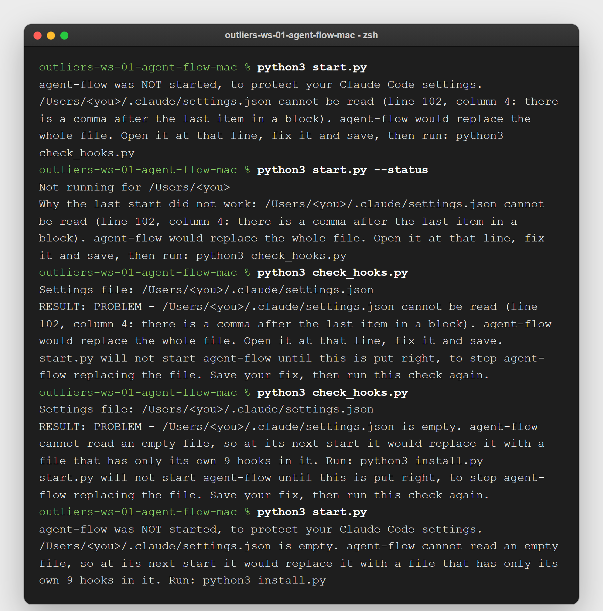
--status repeats the reason, and check_hooks.py says the same words. The last part of the picture is an empty settings.json file. Printed on a test Mac on 2026-09-25.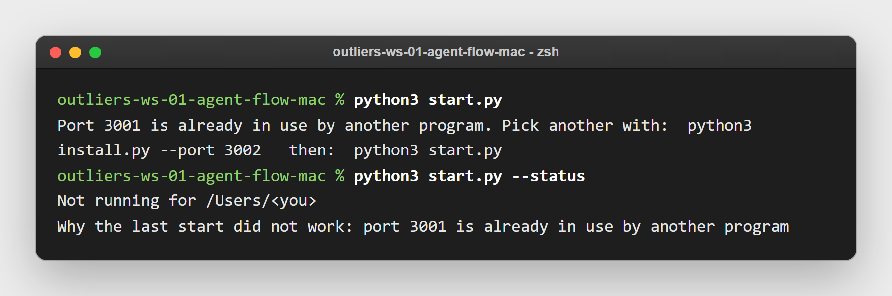
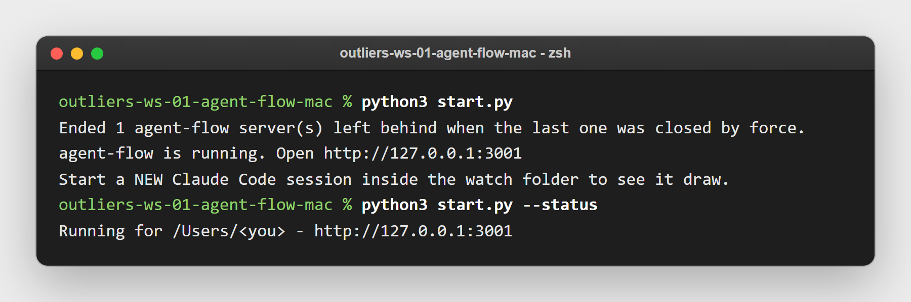
guard.py (our program between agent-flow and your browser) was closed by force on a test Mac on 2026-09-25; the next start ended the server it left behind and printed a line saying it did.do not run npx agent-flow-app by hand while this kit is installed. You get 2 servers. Your sessions report to only 1 of them, the one watching the folder nearest to the session, and a copy started by hand runs without our settings check, so it can throw away settings.json. Use python3 start.py instead.
Piece 1 · agent-flowDownload
The repository: https://github.com/OUTLIERS-ai/outliers-ws-01-agent-flow-mac
git clone https://github.com/OUTLIERS-ai/outliers-ws-01-agent-flow-mac
cd outliers-ws-01-agent-flow-mac
python3 install.pyThen python3 start.py and open http://127.0.0.1:3001.
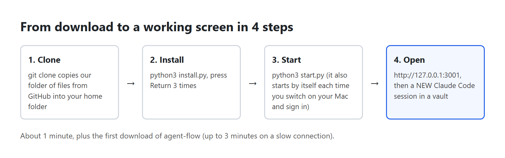
agent-flow itself: github.com/patoles/agent-flow (Apache 2.0 licence). Our files: MIT licence. Both are free licences: you may use and change the code.
Piece 1 · agent-flowWhat was run on a Mac
Run https://github.com/OUTLIERS-ai/outliers-mac-test/actions/runs/36135338165 on 2026-09-25. Every command below was typed exactly as this guide prints it, each in a new Terminal window, from a fresh download of this repo.
7 runs on GitHub's test Macs. 3 set up like a new member's Mac (Python from python.org, Node.js from nodejs.org, no Homebrew): macOS 15.7.9 on Apple Silicon, macOS 15.7.9 on Intel, macOS 26.6.2 on Apple Silicon. And 2 with Homebrew installed as well, each run twice, once with Homebrew added before Python and once after: macOS 15.7.9 on Apple Silicon and macOS 15.7.9 on Intel.
Command, then what happened to it
python3 -c "import sys; print(sys.prefix)"
run on all test Macs
node --version
run on all test Macs
echo 'export PATH="$HOME/.local/bin:$PATH"' >> ~/.zshrc
run on all test Macs
claude --version
run on all test Macs
python3 --version
run on all test Macs
git --version
run on all test Macs
git clone https://github.com/OUTLIERS-ai/outliers-ws-01-agent-flow-mac
run on all test Macs
cd outliers-ws-01-agent-flow-mac
run on all test Macs
python3 install.py
run on all test Macs
launchctl list | grep outliers
run on all test Macs
python3 start.py --status
run on all test Macs
python3 check_hooks.py
run on all test Macs
python3 start.py --stop
run on all test Macs
python3 start.py
run on all test Macs
python3 cleanup.py
run on all test Macs
cp -R outliers-ws-01-agent-flow-mac agent-flow-test
run on all test Macs
cd agent-flow-test
run on all test Macs
rm -rf logs
run on all test Macs
python3 -m venv ~/outliers-checks
run on all test Macs
source ~/outliers-checks/bin/activate && python -m pip install pytest
run on all test Macs
source ~/outliers-checks/bin/activate && python -m pytest -q
run on all test Macs
python3 install.py --port 3002
read, not run: only for a Mac whose port 3001 is taken; the member test keeps the default port
python3 install.py --autostart
read, not run: only after an earlier --no-autostart, which this test does not choose
claude
read, not run: needs your own Claude Code login
python3 install.py --uninstall
run on all test Macs
The LaunchAgent the installer writes was loaded and started on every test Mac, as your Mac does when you log in, and the page answered.
source ~/outliers-checks/bin/activate && python -m pytest -q printed 54 passed, 5 skipped on every test Mac.
GitHub's test Macs are not a member's Mac, and 2 steps were not tested on a real Mac:
- A real restart. The test Macs cannot be switched off and on again, so it was not tested that agent-flow starts by itself after you restart your Mac. The file that starts it when you log in was loaded and checked on the test Macs; the restart itself was not.
- macOS's question "Allow Python to find devices on local networks?" The test Macs never show it. If it appears the first time the page opens, press Allow. This advice is not tested on a real Mac.
https://github.com/OUTLIERS-ai/outliers-ws-01-agent-flow-mac
git clone https://github.com/OUTLIERS-ai/outliers-ws-01-agent-flow-mac
cd outliers-ws-01-agent-flow-mac
python3 install.py